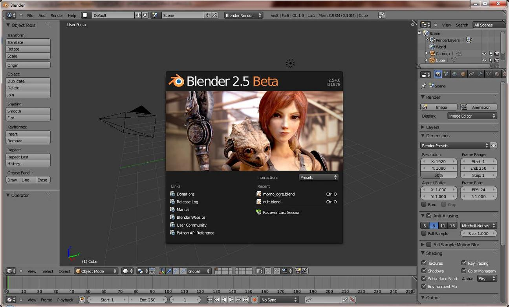
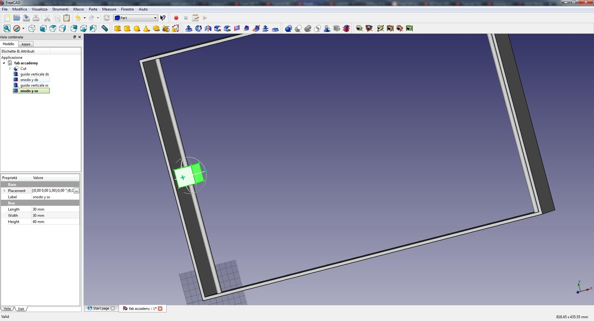
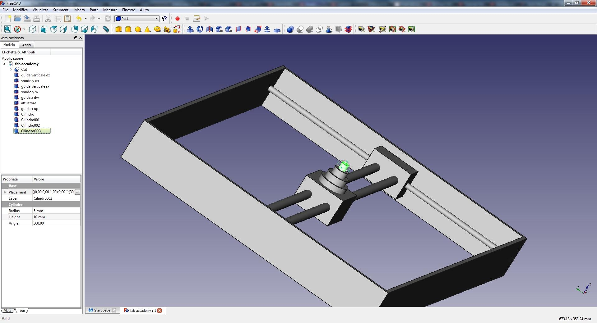
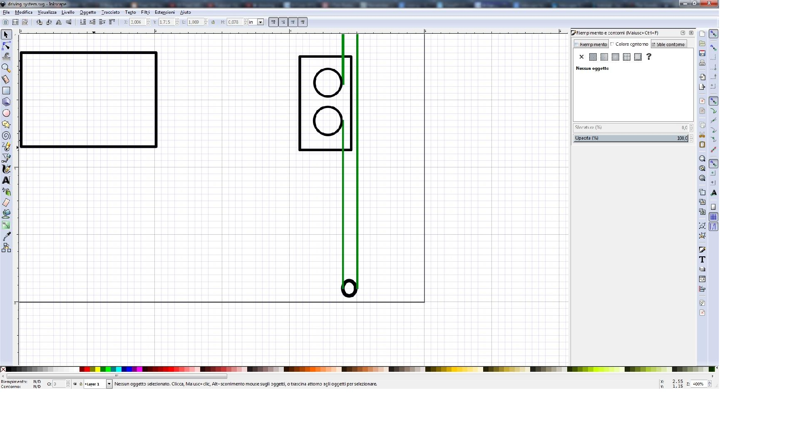
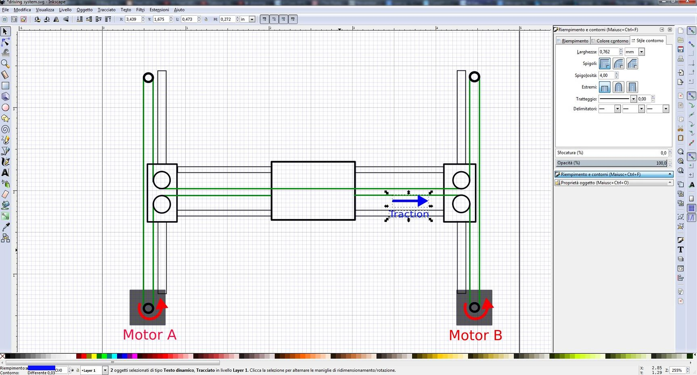
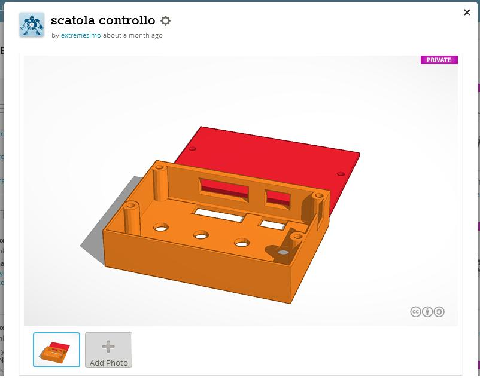

Computer Aided Design
the weekly assignment consist in experiment some CAD (computer aided design) 2d and 3d.
Blender
I found it very useful software, is open source, free and very light in in comparing to the things it can make.
You can work in mesh or on the surface whit some brushes.
It is really indicated for some artistic purpose, he had a really nice rendering engine, but is not simple to use, because of the high number of the option and command.
the interface is really full of things and this means some confusion finding what you need.

FreeCAD
This free software is most likely oriented to the mechanical and precision drawing. It have some pre-compiled tool for architectural drawings and for naval design.
I used it for draw a first representation of the mechanical system of my robot storage.
In the pics below you can see my attempt to draw a xy movement system. It is for the select-head of my system, it will be placed in the back of storage drawers.


Download the STL file
Inkscape
This is a free software who make vectorial file, used by most of the CAM program ( laser, cnc router, etc).
I use this tool for make a vectorial image of the h-bot system i will use on the robotic storage.
I make some analysis of the tension on the driving belt, for showing where them are pulled and where them are pushed.


Download the SVG file
ThinkerCad
I used a lot this web software for make some stl file for 3d printing.
The interface is really user friendly and also the measuring system is really nice and fast.
The limitation is that you can make only simple model because the power is limited to the strength of the internet file and browser spec.
But at the end of the day is very useful for some fast, simple and little 3d object.
